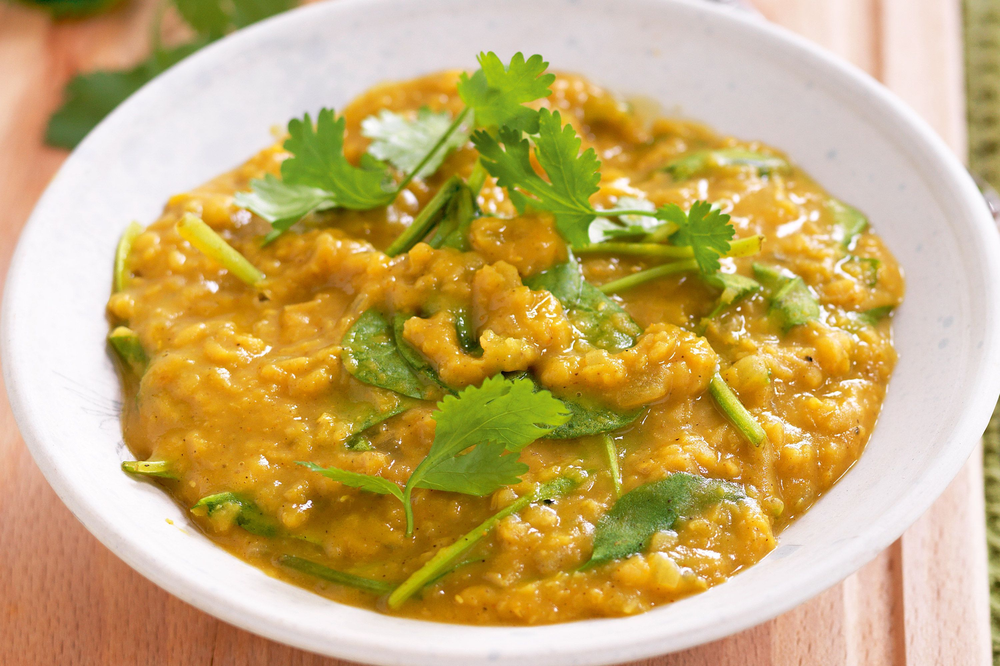

Lentil Dahl

Description
This is a warming and exotic recipe perfect
for chilly winter evenings. It is easy to make,
delicious and nutritious!
This recipe makes 4 serves.
Ingredients
- 250g Dried red lentils
- 1 Can of Coconut Milk
- 3 cups of water
- 2 tbsp curry powder
Steps
- Rinse the lentils
- Bring letnils to boil with the water
- Add spices and coconut milk
- Cooke for 20min and serve!